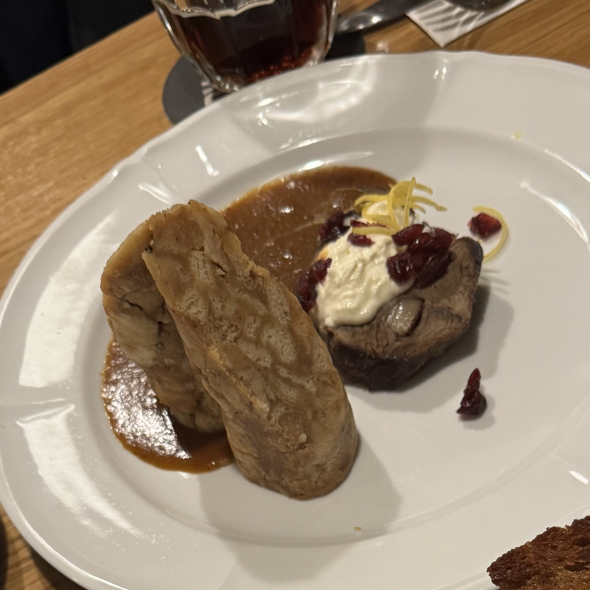
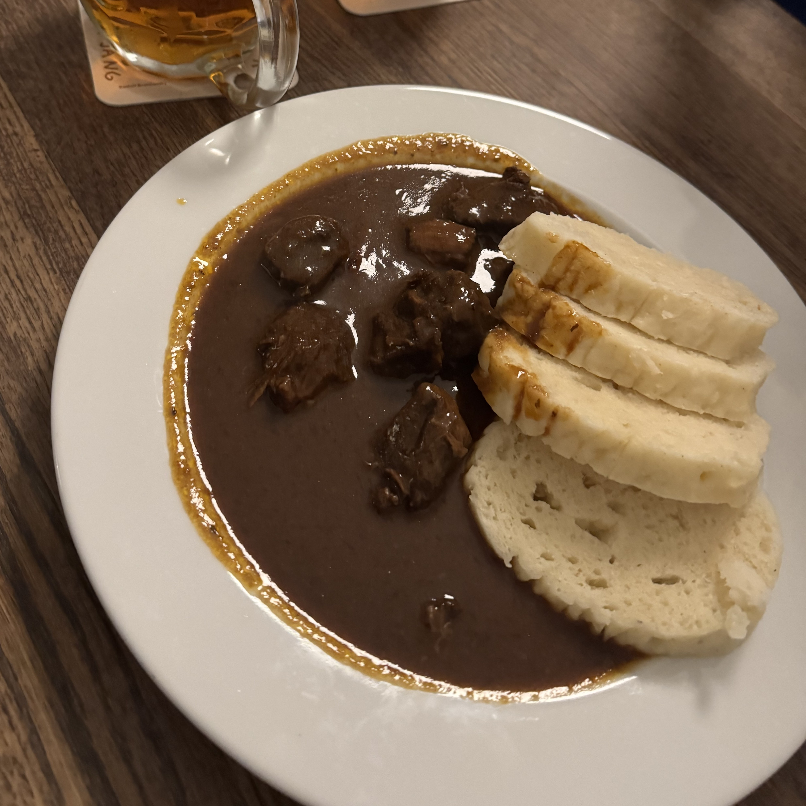
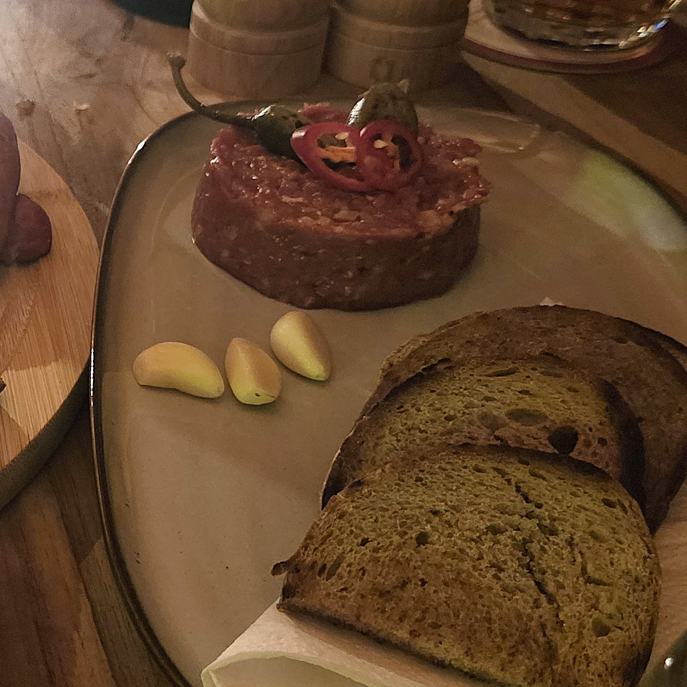
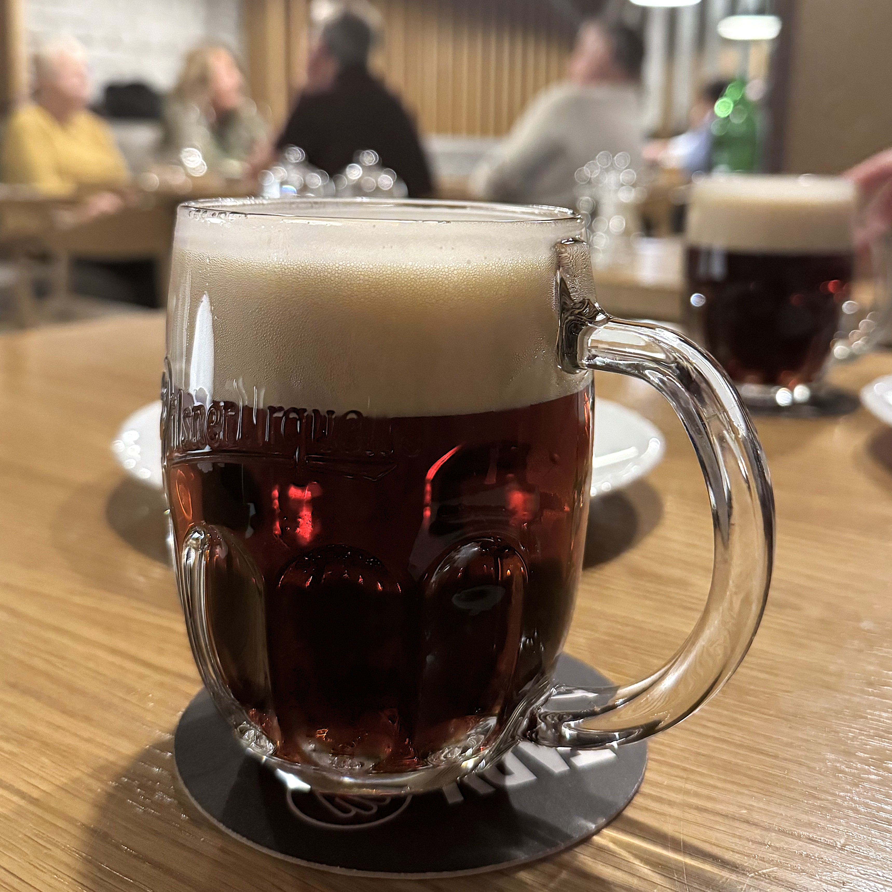
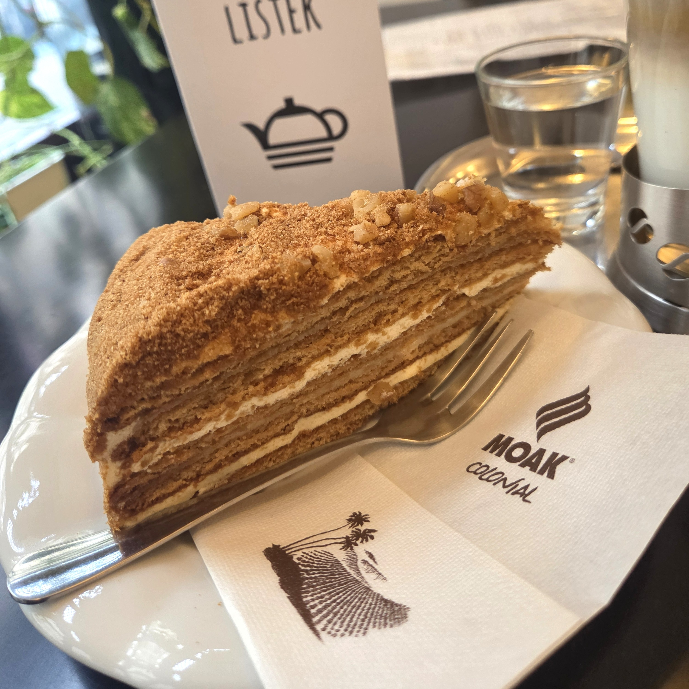
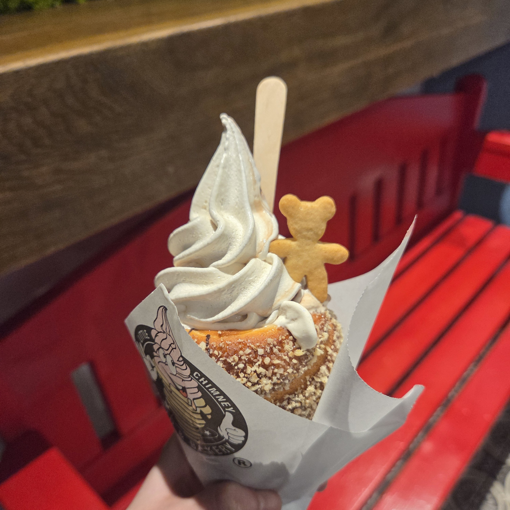
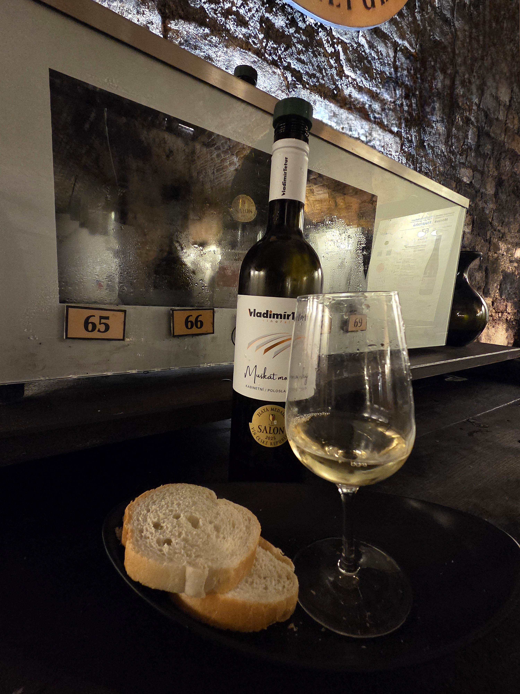
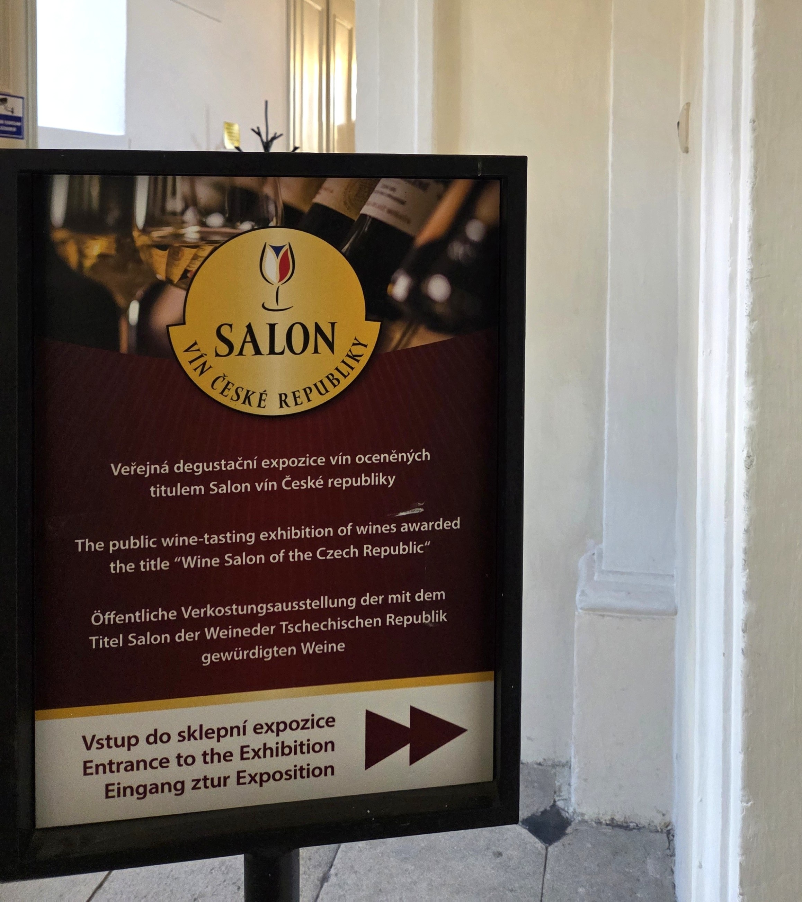

Czech Republic

Prague · Cesky Krumlov · Moravia
한 손에는 맥주, 다른 한 손엔 와인을
MUST EAT 이건 꼭 먹어야 해!

Svickova

- 부드러운 소고기 안심 요리
- 크림소스와 라즈베리 잼의 조합으로
달콤하면서도 고소한 맛이 특징
- 주로 크네들리키* 와 함께 제공
- 크림소스와 라즈베리 잼의 조합으로
달콤하면서도 고소한 맛이 특징
- 주로 크네들리키* 와 함께 제공
Goulash

- 소고기, 양파, 파프리카를 푹 끓여 만든
체코식 쇠고기 스튜
- 진하고 깊은 감칠맛이 특징
- 헝가리식보다는 국물이 걸쭉한 편이며
빵을 소스에 찍어 먹기 좋음
체코식 쇠고기 스튜
- 진하고 깊은 감칠맛이 특징
- 헝가리식보다는 국물이 걸쭉한 편이며
빵을 소스에 찍어 먹기 좋음
Beef Tartare

- 체코식 전통 육회 요리
- 양념된 다진 생소고기와 생마늘, 빵이 함께
제공됨
- 빵에 마늘을 문지른 후 고기를 올려먹음
- 양념된 다진 생소고기와 생마늘, 빵이 함께
제공됨
- 빵에 마늘을 문지른 후 고기를 올려먹음
Draught Beer

1인당 연간 맥주 소비량 세계 1위!
• Pilsner Urquell:- 쌉싸름한 홉 향과 깔끔한 목넘김의
황금빛 라거 맥주
- 플젠에서 양조장 투어 및 시음 가능
• Kozel:
- 부드러운 목넘김과 풍부한 풍미가 특징
- Light / Dark / Mix 종류 존재
- 흑맥주인 Dark가 특히 유명
Medovnik

- 체코의 대표적인 전통 디저트
- 말렌카(Marlenka)라는 이름으로도 유명
- 꿀과 시트를 여러 겹 쌓아 만든 케이크로,
묵직한 단맛과 견과류의 고소함,부드러운
식감이 특징
- 마트에서도 포장 제품을 쉽게 구매 가능
- 말렌카(Marlenka)라는 이름으로도 유명
- 꿀과 시트를 여러 겹 쌓아 만든 케이크로,
묵직한 단맛과 견과류의 고소함,부드러운
식감이 특징
- 마트에서도 포장 제품을 쉽게 구매 가능
Trdelnik

- 일명 ‘굴뚝빵’으로 불리는 체코 대표 간식
- 설탕 등을 입혀 달콤하고 쫄깃한 식감
- 기본, 초코, 아이스크림 등 다양한 종류
- Karlova 거리 일대에 가게가 많음
- 설탕 등을 입혀 달콤하고 쫄깃한 식감
- 기본, 초코, 아이스크림 등 다양한 종류
- Karlova 거리 일대에 가게가 많음
EXPERIENCE 체코의 또 다른 술 문화


Wine Tasting
프라하가 맥주라면, 모라비아는 와인!
체코의 또 다른 매력
- 체코 남부의 모라비아 지역은 화이트 와인으로체코의 또 다른 매력
유명한 체코 와인의 중심지
- 매년 약 100여 종의 체코 대표 와인 엄선
- 발티체 국립 성 지하 와인 저장고에서 2시간 동안
자유롭게 시음 가능
- 와인과 곁들일 빵이 무료 제공되며, 마음에 드는
와인은 현장 구매 가능
- 시음 티켓 정가는 CZK 725, 온라인 예매 시
CZK 675로 구매 가능
TIP
:
프라하에서 발티체 가는 법:
Praha hl.n. ➔ Břeclav (환승) ➔ Valtice město
체코 철도청 공식 웹사이트 České dráhy에서
기차표 예매 가능 ( 공식 예매 링크)
와인 마시는 일정이니 안전하게 근처에 숙소
잡는 것을 추천